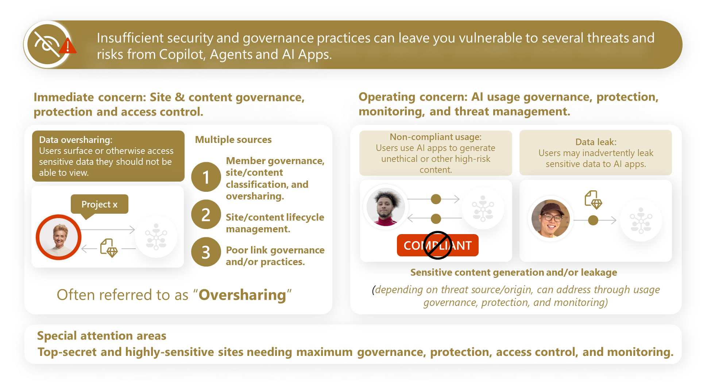

Addressing and preventing Microsoft 365 data oversharing risks

A structured approach comprised of processes, policies, tools, and guidelines designed to identify, assess, and address instances of excessive or inappropriate sharing of files, folders, and resources within Microsoft 365 environments (e.g., Microsoft SharePoint Online, OneDrive for Business, Teams).
Five identified risk areas across your Microsoft 365 tenant, ranked by severity and business impact.
SharePoint site memberships are broader than they should be, granting unintended users access to sensitive containers. Microsoft 365 Copilot indexes content from these over-permissioned sites, exposing confidential information through AI-generated responses. This represents the highest-impact risk because it combines permissioning failures with AI amplification.
Content from the most sensitive sites—legal, M&A, executive strategy—is leaking through a combination of inadvertent sharing actions, cross-site references embedded in documents, and the absence of robust DLP policies. Without sensitivity labels, Conditional Access policies, and proper data loss prevention rules, these sites have no effective last line of defense against unintended exposure.
Documents are being stored in sites whose classification does not match the sensitivity of the content. Highly-confidential materials are found on sites labeled merely "Confidential," widening the audience well beyond the intended scope. This mismatch between content sensitivity and container classification creates persistent data leakage paths.
Users frequently share content via "Anyone with the link" or organization-wide links when more restrictive options should be used. These overly broad sharing links persist indefinitely and bypass site-level access controls, creating untracked lateral access paths throughout the tenant. OneDrive personal shares compound the risk by operating outside team governance structures.
Legacy documents and outdated content remain accessible and are being indexed by the Microsoft 365 Semantic Index. Copilot surfaces this stale information as if it were current, leading to misleading AI responses and potential decision-making based on outdated data. The volume of unmanaged content increases the noise-to-signal ratio significantly.
Key metrics and detailed findings from the data security posture assessment across your Microsoft 365 tenant.
Sensitive information types shared with Microsoft Copilot, agents, and other AI apps.
EEEU means every internal user can access these files. This bypasses intended team boundaries and exposes internal-only content at enterprise scale.
Signals high-impact oversharing: sensitive info being accessed by large audiences, increasing risk of leakage, misuse, or accidental exposure.
Without classification, DLP, auto-labeling & security controls cannot activate, leaving the entire tenant unprotected against unintentional disclosure.
External sharing ON everywhere makes accidental or malicious sharing to outsiders extremely likely. A single wrong share link could expose troves of data.
Public Teams expose conversations, files, and channels to the entire company, often unintentionally, increasing misuse and data propagation risk.
Large footprint of external-accessible data exposes corporate content to partners, vendors, agencies, increasing spill risks and dependency on proper guest governance.
Fragmented permissions are high-risk and hard to manage; often where oversharing hides and where sensitive files become invisible to IT.
Silent risk: sensitive files that no one uses are often stale, unmaintained, and highly vulnerable to oversharing or misconfigurations. Attackers frequently exploit such forgotten data.
These represent critical exposures — anyone with the link (sometimes even without auth in legacy cases) may access the file. Immediate remediation needed.
Prioritised remediation actions based on the key findings from the assessment.